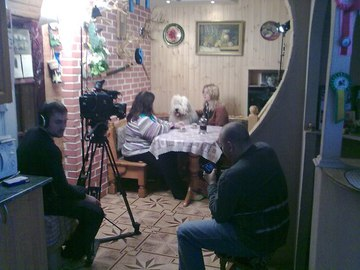
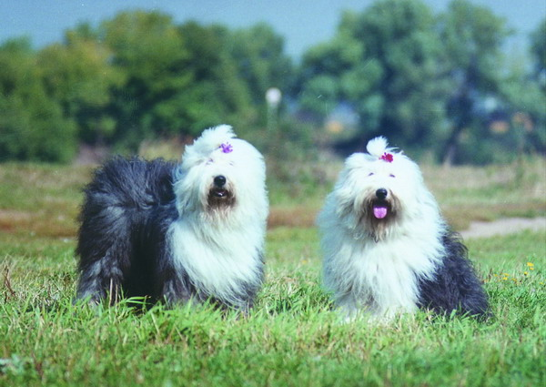
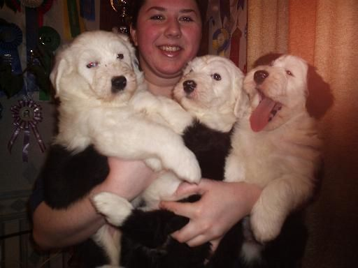
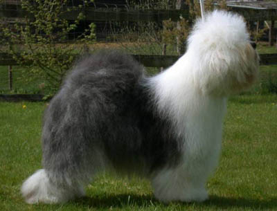
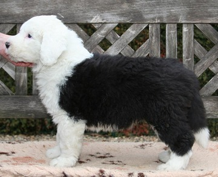

Мы кушаем корма " HAPPY DOG " с 30 % скидкой!
Почти все о нас ( видео) в программе " Загородная жизнь "! - нажимайте и смотрите!
Фотографии : на съемках фильма о нашем питомнике.

Международная выставка собак всех пород"ЕВРАЗИЯ-2013 2xCACIB (FCI) 23-24 марта.

Питомник существует с 1991 года.Название питомника подсказала кличка моей первой собаки - Гудмен Фром Зе Вайт Энджелс (Хозяин из Белых Ангелов),к тому же он был бело-голубого окраса, так появилось название "Из Бело - Голубых Ангелов ".
Гудмен является основоположником питомника. Он происходит отМачо Мехикано и Олли фон ден Блю Бобс. Гудмен один из самых первых Чемпионов России. У него более 90 побед на выставках разного ранга, в том числе "Евразия- 93,95,96", "Россия-92,93". 56 раз он был признан Лучшим Представителем Породы; 4 раза был Лучшей собакой выставки. До последних дней он продолжал радовать нас своим отличным здоровьем и боевым характером. Его потомки до сих пор показывают на выставках превосходные результаты. Дети и внуки с успехом используются в племенном разведении.

Гудмен Фром Зе Вайт Энджелс и Идель .
Вторая собака питомника- дочка Гудмена - Идель (м.Анжела Гайлан) продолжила блистательную карьеру своего отца, получив титулы: Чемпион России, Чемпион Беларуси, 2 х R.CACIB, 26 х CAC, 17 раз была признана Лучшим Представителем Породы.
Идель дала 3 прекрасных помета:
1) сJolly Glews Humptydumpty (импорт Германия).
2) с Грей Коутс Лав Ми Тендер (импорт Финляндия).
3) с Иридисом (сыном Jolly Clews Humptydumpty).
Во всех этих пометах она передала детям свои лучшие качества.
Чемпион России, Беларуси, 3 х CACIB
Jolly Clews Humtydumpty
Другой яркий производитель питомника был привезен из Германии - Jolly Clews Humptydumpty (о.Sweet Expression s Dappere Dodo - м. Jolly Clews Fascination), внук двух Интерчемпионов, Чемпионов Мира и Европы:Zermatt aus dem Elbe Urstpomtal и Sparkle Square China Blue.
Унаследовав прекрасные экстерьерные данные от своих предков, Jolly Clews Humptydumpty очень удачно начал свою выставочную карьеру. За сравнительно короткий срок он стал Чемпионом России, Беларуси, 3хCACIB, 2х R.CACIB, 7раз был признан Лучшим Представителем Породы.
Его гибель стала для нас большой трагедией. Эта собака была носителем препотентного фенотипа. Его потомки имеют четко выраженный породный тип линии «Humptydumpty». Они отличаются яркой, выразительной внешностью и живым темпераментом. Конечно, все его дети и внуки разные, но, тем не менее, все они имеют этот породный тип. Если вы увидели хотя бы одного представителя этой линии, вам не составит труда отличить и других его потомков, их невозможно спутать с другими представителями этой породы. Многие владельцы староанглийских овчарок с первого взгляда определяют эту линию.
Отец - Jolly Clews Humtydumpty:
1) САС, ЛК, ЛПП -Тристан - (м. Изабель Люристанк) г. Москва
2) Чемпион России-Ирмин - (м. Бабетта Анталлис) г. Москва
3) Чемпион России-Идуна - (м. Бабетта Анталлис) г. Москва
4) САС, ЛС, ЛПП- Иштар - (м. Бабетта Анталлис) г. Москва
5) 3хСАС, ЛК, ЛПП-Иридис - (м. Бабетта Анталлис) г. Москва
6) Чемпион России-Бенджамин- (м. Афелия Аюм) г. Екатеринбург
7) Чемпион России -Анчар - (м. Бьюти Скай Лилиана) г. Москва
8) САС, ЛК, ЛПП-Денис- (м. Идель) г. Москва
9) САС, ЛК, ЛПП-Дэлон- (м. Идель) г. Калининград
10) 3хСАС, ЛС, ЛПП- Абигайль - (м. Дельфи ол Красс Люкам) г. Новосибирск
11) Чемпион России- Пренстен - (м. Ганриэтта Алькрис) г. Санкт-Петербург
Внуки Идель и Jolly Clews Humptydumpty:
Интерчемпион, Чемпион России, Беларуси, Украины, Гранд Чемпион, Чемпион Клуба, 2хIII в группе -ЯРА ЯРБИ(о. Денис - м. Илга Барби) вл. Блинкова Н., г. Москва.
Яра Ярби.
Интерчемпион,Ч.России,Ч.Украины,РКФ,11 х CACIB,ПК -СКАЙ ХАРВЕСТ ДУБРОВСКИЙ
(о.Денис,м.Bailain Playful Friend), вл.Ярова Татьяна,г.Волгоград
А также хочется отметить заслуги и наших правнуков:
Чемпион России,Чемпион РКФ,2 x Чемпион РФСС,АНКОР,1 x CACIB,
1 x RCACIB,1 x КЧК,2 х СС,3 х UKCIB,13 x CAC,3 BIG- 1,2BIG-2,1BIG-3
ДЕВИЦА КРАСАВИЦА С ВОСХОДА - правнучка Гудмен Фром Зе Вайт Энджелс
(о.Бьюти Скай Ланселот,м.Касандра) , вл.Домбровская Оксана,г .Москва
Юный Чемпион России,Чемпион России,ЧРКФ, 4 х CACIB
СКАЙ ХАРВЕСТ ЕКАТЕРИНА ВЕЛИКАЯ - правнучка Jolly Clews Humtydumpty
(о.Ирмин,м.Bailain Playful Friend) , вл.Ярова Татьяна, г.Волгоград
Собаки питомника «Из Бело-Голубых Ангелов» успешно используются в разведении других питомников и заводских линий. Подрастают внуки в Польше, Швеции, Австрии, Турции, Беларуси ,Украине;
по всей России:
-
Калининград
-
Ижевск
-
Мурманск
-
Хабаровск
-
Майкоп
-
Магнитогорск
-
Тольятти
-
Чебоксары
-
Нижний Новгород
-
Санкт - Петербург
-
Екатеринбург
-
Нижнекамск
-
Тула
-
Владимир
-
Волгоград
-
Благовещенск
-
Сыктывкар
-
Новокузнецк
-
Владивосток
-
Комсомольск - на- Амуре
- Кемерово
- Ростов на Дону
- Якутск
У всех потомков прослеживаются: четкий породный тип, крепкий костяк, красивая голова, хорошая длинная шея, сбалансированность и гармоничность сложения в сочетании со свободными движениями и характерной иноходью.
Отличный шерстяной покров, практически у всех собак превосходная пигментация, даже у собак с голубыми глазами. В питомнике не было отмечено рождения щенков с белыми пятнами на корпусе и голуборожденных. Поэтому некоторые питомники стараются использовать наших кобелей для улучшения генотипа своих собак.
Питомник "Из Бело - Голубых Ангелов"
Представляю вам еще одну звездочку нашего питомника , дочь Humptydumpty -Princessa Passia Naslednitsa Humptydumpty (м. Ганриэтта Алькрис) - Интерчемпион, Чемпион России, Беларуси, 4хCACIB, Чемпион РФСС, Чемпион РОЛС, ЛЮ, 2хЛЩ, 6 раз была признана Лучшей Сукой Породы, 4х ЛПП, 16хCW, 2х 1-е место в группе(BIG), КЧК. Победитель: "Кубок HILL'S, "Каменный цветок - 2002", "Кубок Самбии - 2002".
Красивая , крупная , элегантная , женственная сука- очень сильно похожа на своего отца! Для меня она стала талисманом в память о своем очень ярком , но так мало пожившем с нами Humptydumpty!
1-ый помет- ПРИНЦЕССЫ.
В 2004 году ее возили в Польшу на вязку к кобелю Zatopek aus dem Elbe - Urstromtal в питомник"Kudlaty Tramp" (владелец -Кристина Растворовска).
А 20 мая 2004 года родилось 7 замечательных щенков: 4-кобеля и 3 - суки.
1) Орестей из Бело-Голубых Ангелов- Ч.России, Ч.РКФ (вл.Копылова М.Д., г.Екатеринбург)
2) Оберон из Бело-Голубых Ангелов-Ю.Ч.России, Ч.России, Ч.Украины,Ч.Сербии и Черногории (вл.Поройков И.М., г.Ижевск)
3) Оскар из Бело-Голубых Ангелов- Кандидат в Ч.России и РКФ (г. Комсомольск -на -Амуре)
4) Ок'конэр из Бело-Голубых Ангелов-Ч.России,Ч.Румынии,Ч.Сербии и Черногории,Болгарии,Ч.РКФ,3хCACIB,КЧК,Ч.РКФ. (вл.Рудакова И.В.,г .Москва)
5) Олли из Бело-Голубых Ангелов- Ч.России,Ч.РКФ,Ч.Болгарии ( вл. Рудакова И.В., г.Москва)
6) Оссана из Бело-Голубых Ангелов-CACIB, Чемпион РКФ, 4-х ЛСП, Кандидат в Ч.России( вл. Шалаева -Рудакова,
г.Екатеринбург)
7) Оливия из Бело-Голубых Ангелов- Ч.России, Ч. Белорусси ,кандидат Ч.Польши,CACIB.( вл. Кошназарова -Рудакова, г.Москва)
2-ой ее помет , рождения -21 декабря 2006г , был от привезенного мною из Бельгии кобеля - Emoticon aus dem Elbe - Urstromtal (о. Zollfrei aus dem Elbe - Urstromtal x м.Boucheron aus dem Elbe - Urstromtal).
Родилось 3 щенка, 2-кобеля и 1 - сука. 
1. ПОКОРИТЕЛЬ СЕРДЕЦ из Бело-Голубых Ангелов-Ю.Чемпион России, Ч.России,Ч.РКФ .
2. ПРЕСТИЖ ШОУМЕН из Бело-Голубых Ангелов.
3. ПАЛЛАДА из Бело-Голубых Ангелов.
Интерчемпион, Чемпион России, Беларуси, РКФ, РФСС, РОЛС
Принцесса Пассия Наследница Хамптидампти - в этом году ( 11.11.2010) ей исполнилось уже 11 лет , очень хочется что бы она радовала нас еще очень и очень долго! Здоровья тебе моя любимая девочка!
В июне 2005 года из питомника " aus dem Elbe - Urstromtal" (владелец - Cornelia Loest (Hartman),Бельгия) был привезен в Москву кобель Emoticon aus dem Elbe - Urstromtal (о. Zollfrei aus dem Elbe - Urstromtal x м.Boucheron aus dem Elbe - Urstromtal).
Интерчемпион, Ч.Дании, Ч.Швеции (103 чемпион питомника "aus dem Elbe - Urstromtal")-
Zollfrei aus dem Elbe - Urstromtal (отец)
Сornelia Loest (Hartman) и
Чемпион Люксембурга (100 чемпион питомника "aus dem Elbe - Urstromtal")-

Boucheron aus dem Elbe - Urstromtal (мать)
Emoticon aus dem Elbe - Urstromtal
Сейчас он уже Интер Чемпион , Ю.ЧЕМПИОН РОССИИ, ЧЕМПИОН РОССИИ , ЧЕМПИОН ПОЛЬШИ , ЧЕМПИОН БЕЛОРУССИ , 9 х CACIB , Ю. ЧЕМПИОН ЕВРОПЫ (UCI), 3 х Ч.РКФ , 3х КЧК .
Его дети , а теперь уже и внуки не однократные победители выставок и из них уже много ЧЕМПИОНОВ различных стран.
12 мая 2010 г к нам в питомник приехал еще один потомок питомника " aus dem Elbe - Urstromtal"
JUSTDOIT aus dem Elbe-Urstromtal ( Тедди) - Юный Чемпион России , ЧемпионРоссии , Чемпион РКФ .
отец : -BRINKLEY BUDDY HOLLY WITH MACOPA (CH.B,GB)
мама : -ELBANDITA aus dem Elbe-Urstromtal ( CH.I.B.- 09 ,BELG.-09, FIN,RUS-07,LUX., NED., SUEDE.-08, ALL).
ТЕДДИ ( 12.01.2010 ).

Нам 10 месяцев !

Наша 1-ая выставка - JCAC , ЛЮ !
2-ая выставка - JCAC , ЛЮ , ЛК , ЛПП , BIG-3 !
И еще с нами была дочка Семена - Маша ( Пушистое Волшебство Грация) - САС , ЛС , ЧФ ОАНКФО !
О других ярких представителях питомника Вы можете узнать в разделе Чемпионы.
Питомник " Из Бело - Голубых Ангелов"
владелец питомника - Рудакова Ирина Владимировна
8 499 504-83-79 ; моб. 8-916-796-91-03
e- mail: bobtail-angel@mail.ru
|
{kind=link}
{kind=link}
{kind=link}
{kind=link}
{kind=link}
{kind=link}
{kind=link}
{kind=link}
{kind=link}
{kind=link}
{kind=link}
{kind=link}
{kind=link}
{kind=link}
{kind=link}
{kind=link}
{kind=link}
{kind=link}
{kind=link}
{kind=link}
{kind=link}
{kind=link}
{kind=link}
{kind=link}
{kind=link}
{kind=link}
{kind=link}
{kind=link}
{kind=link}
{kind=link}
{kind=link}
{kind=link}
{kind=link}
{kind=link}
{kind=link}
{kind=link}
{kind=link}
{kind=link}
{kind=link}
{kind=link}
{kind=link}